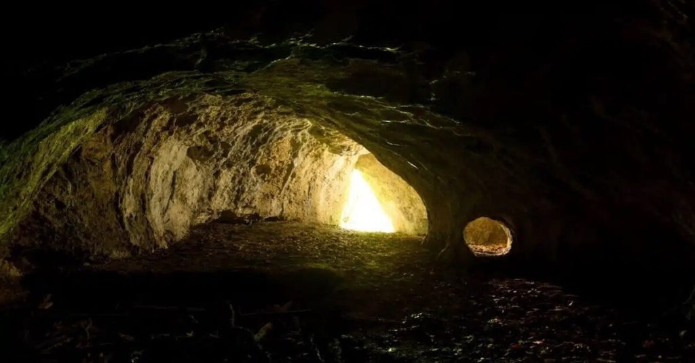
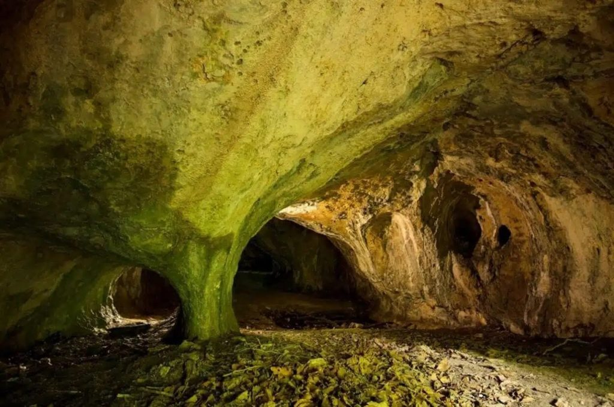
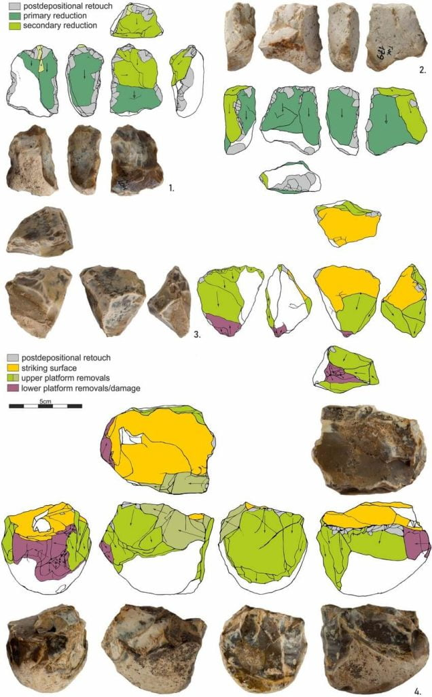

ဒီ စမ်းစစ်မှု အရ ဒီ ကျောက်လက်နက် တွေဟာ ဒီ ဒေသမှာ ရှာတွေ့ခဲ့ ပြီးသမျှ ကျောက်လက်နက် တွေအနက် သက်တမ်း အရင့်ဆုံး ကျောက်လက်နက်တွေ ဖြစ်တယ် ဆိုတာ သိလာ ရပါတယ်။
ဒီဂူဟာ ပိုလန်နိုင်ငံ မာလိုပိုလ်စကာ (Malopolska) ဒေသက Tunel Wielki ကျောက်ဂူ ဖြစ်ပါတယ်။ ဒီ ကျောက်လက်နက် တွေရဲ့ သက်တမ်းဟာ နှစ် ၄၅၀,၀၀၀ ကနေ နှစ် ၅၅၀,၀၀၀ ခန့်အတွင်း ရှိတယ်ဆိုတာ ရေဒီယို သတ္တိကြွ နည်းပညာနဲ့ သက်တမ်း သတ်မှတ်မှု ပြုရာက တွေ့ရှိခဲ့ ကြရပါတယ်။
ဒီလို သက်တမ်း သတ်မှတ် နိုင်ခဲ့တဲ့ အတွက် ဒီ လူသားတွေရဲ့ အကြောင်း၊ သူတို့ ဘယ်လို ရောက်ရှိ လာကြသလဲ၊ ဘယ်အရပ် ဒေသတွေမှာ ပျံ့နှံ့ နေထိုင် ခဲ့ကြသလဲ အစရှိတာတွေကို ပိုမို သိရှိ လာကြမှ ဖြစ်ပါတယ်။
လွန်ခဲ့တဲ့ နှစ် ၅ သိန်းခန့်က ဥရောပ အရှေ့ပိုင်းမှာ ဟိုမိုစေးပီးယန်း (Homo sapiens) လို့ခေါ်တဲ့ ခေတ်လူသားတွေ ရောက်ရှိခြင်း မရှိကြ သေးပါဘူး။ အဲ့သည်အချိန်က ဒီ ဒေသမှာ နေထိုင်ခဲ့ ကြတဲ့ လူတွေဟာ Homo heidelbergensis လို့ခေါ်တဲ့ ရှေးဟောင်း လူသား မျိုးစု ဖြစ်ပါတယ်။ ဒီ လူသား မျိုးစုဟာ အခု အချိန်မှာတော့ မျိုးတုန်း ပျောက်ကွယ်လို့ သွားခဲ့ကြပြီ ဖြစ်ပါတယ်။
ပညာရှင် တွေက ဒီ ရှေးလူ မျိုးနွယ်စု ကနေပြီး ဟိုမို စေးပီးယန်း (Homo sapiens) ခေတ်လူသားတွေရော နီယန်ဒါသဲလ် (Homo neanderthals) တွေရော ဆင်းသက် ပေါက်ဖွားလာ ကြတယ်လို့ ယူဆ ကြပါတယ်။
ဒီအချက်သာ မှန်ကန် ခဲ့မယ်ဆိုရင် လွန်ခဲ့တဲ့ နှစ် ၅ သိန်းက ဥရောပတိုက်ရဲ့ ကြမ်းတမ်းတဲ့ ရာသီဥတုမှာ အသက်ရှင်သန် နိုင်ဖို့ဆိုရင် ရုပ်ပိုင်းရော ဓလေ့ ထုံးတမ်းပိုင်းရောကို ဒီ ကြမ်းတမ်းတဲ့ ရာသီနဲ့ လိုက်လျောညီထွေ ဖြစ်အောင် ပြောင်းလဲမှုတွေ ပြုလုပ် ခဲ့ရမယ်လို့ ပညာရှင် တွေက ယုံကြည် ကြပါတယ်။

နောက်ပြီး ဒီလို ကြမ်းတမ်းတဲ့ သဘာဝ ပတ်ဝန်းကျင်နဲ့ လိုက်လျောညီထွေ ဖြစ်အောင် ဘယ်လို ပြုပြင်ပြောင်းလဲ မှုတွေ ပြုလုပ်ခဲ့ ကြသလဲဆိုတာကလဲ စိတ်ဝင်စား စရာ မေးခွန်းတစ်ခု ဖြစ်ပါတယ်။
Tunel Wielki လှိုဏ်ဂူကို ၁၉၆၀ ပြည့်လွန် နှစ်တွေက တူးဖေါ် ခဲ့ကြတာ ဖြစ်ပါတယ်။ ဒါပေမယ့် နောက်တကြိမ် ဒီဂူကို ပြန်လေ့လာတာကိုတော့ ၂၀၁၆ ခုနှစ်ကျမှ ပြန်လည် လုပ်ဆောင် နိုင်ခဲ့ပါတယ်။

ဒါ့ကြောင့် သုတေသီ တွေဟာ ဒီဂူကို တတိယ အကြိမ်အဖြစ် ၂၀၁၈ ခုနှစ်မှာ နောက်ထပ် လေ့လာရေး ဆင်းခဲ့ ကြပါတယ်။ အရင် တူးထားတဲ့ ကျင်းတွေအနက်က တစ်ခုကို ပြန်ဖေါ်ပြီး မြေသား နမူနာနဲ့ တိရစ္ဆာန် အရိုး နမူနာတွေ ပြန်ကောက်ယူ ခဲ့ပါတယ်။
ဒီ လေ့လာချက် အရ အပေါ်ယံ မြေလွှာရဲ့ သက်တမ်းဟာ မူလ ခန့်မှန်းခဲ့ သလို လွန်ခဲ့တဲ့ နှစ် ၁၁,၇၀၀ နဲ့ ၄၀,၀၀၀ ကြားက ဖြစ်တာကို အတည်ပြုနိုင် ခဲ့ပါတယ်။ ဒါပေမယ့် သူ့အောက်က မြေလွှာကတော့ ဒီ့ထက် ပိုစောတဲ့ ခေတ်က မြေလွှာဖြစ်ကြောင်း တွေ့ရှိခဲ့ ကြပါတယ်။
ဒီအရိုးတွေ တွေ့ရှိတဲ့ မြေလွှာထဲမှာ ထူးထူးခြားခြား တွေ့ရ တာကတော့ ကျောက်လက်နက် အကြမ်းထည် (lint knapping) တွေရဲ့ အထောက်အထား တွေပဲ ဖြစ်ပါတယ်။ ဒီ အထဲမှာ ကျောက်ချပ်လွှာ (flint flakes) လေးတွေကိုလဲ တွေ့ခဲ့ ရပါတယ်။ ဒီ ကျောက်ချပ်လွှာ လေးတွေဟာ အခြား ကျောက်လက်နက်တွေ ပြုလုပ်ဖို့ ပထမ အဆင့် အခြေခံ ကုန်ကြမ်းပဲ ဖြစ်ပါတယ်။
ဒီ အကြမ်းထည် ကျောက်လက်နက် တွေအပြင် အချော သတ်ထားတဲ့ ကျောက်လက်နက် တွေကိုလဲ တွေ့ခဲ့ ကြပါတယ်။ ဒီအထဲမှာ ထင်ထင်ရှားရှား တွေ့ရတာ ကတော့ ကျောက်ဓါး တွေပဲ ဖြစ်ပါတယ်။

ပိုလန်နိုင်ငံမှာ ဒီဂူထဲက ကျောက်လက်နက် တွေနဲ့ သက်တမ်းတူ နောက်ထပ် ကျောက်ခေတ်လူနေဒေသ နှစ်ခုကို ရှာဖွေ တွေ့ရှိ ထားပါသေးတယ်။ ဒါပေမယ့် အခု ဂူနဲ့ အခြား ဒေသတွေနဲ့ မတူညီတာတွေ ရှိပါတယ်။ အဓိက ကတော့ အခြား ဒေသတွေက ကွင်းပြင်တွေ ဖြစ်ပြီး အခု ဒေသကတော့ ဂူတစ်ခု ဖြစ်နေတာပဲ ဖြစ်ပါတယ်။
အဲ့သည် ခေတ်က ကျောက်လက်နက် တွေကို ဂူတစ်ခု အထဲကနေ ရှာဖွေ တွေ့ရှိဖို့ ဆိုတာ အတော်လေး ထင်မှတ် မထားတဲ့ ကိစ္စပါလို့ ဒီ သုတေသနမှာ ပါဝင်တဲ့ သုတေသီ တစ်ဦးဖြစ်သူ Małgorzata Kot က ရှင်းပြပါတယ်။
သုတေသီ တွေဟာ ရှေး နှစ် ၅ သိန်းက လူသားတွေ ဒီလို ဂူတခုထဲ မှီတင်း နေထိုင် ခဲ့ကြတာနဲ့ ပတ်သက်လို့ အတော်လေး အံ့အားသင့်ခဲ့ ကြပါတယ်။ ဘာလို့ဆိုတော့ အဲ့သည် ခေတ်အခါက ရာသီဥတု အခြေအနေ အရ ဒီလို ဂူတွေဟာ လူနေထိုင်ဖို့ သိပ်ပြီး သက်တောင့်သက်သာ ရှိတဲ့ နေရာ တွေ မဟုတ်လို့ပဲ ဖြစ်ပါတယ်။
“ဒီဂူတွေဟာ စိုထိုင်းဆ များပြီး အပူချိန် ကလဲအေးစက် နေပါတယ်။ ဒီတော့ ရှေးလူတွေ သိပ်ကြိုက်တဲ့ နေရာတွေတော့ မဟုတ်ပါဘူး။ဒါပေမယ့် တဖက်က ကြည့်ပြန်တော့လဲ ဂူတွေ ဆိုတာက သဘာဝ ကွန်းခိုရာ နေရာတွေ မဟုတ်လား။ နေထိုင်သူတွေ အတွက် လုံခြုံတဲ့ ပတ်ဝန်းကျင် တစ်ခုလို့ ပြောလို့ ရပါတယ်။”
“ဒီမှာ နေထိုင်ခဲ့တဲ့ ရှေးလူသား တွေဟာ ဂူထဲမှာ မီးဖိုတွေ အသုံးပြု ခဲ့ကြတယ် ဆိုတဲ့ အထောက်အထား တွေလဲ တွေ့ရှိ ထားပါတယ်။ ဒီလို မီးကို သုံးစွဲခြင်း ကလဲ အမှောင်ထု နဲ့ စိုထိုင်းမှု တွေကို အထိုက်အလျှောက် လျော့နည်းစေမှာ ဖြစ်ပါတယ်။
ဥရောပတိုက် တစ်တိုက်လုံးမှာ အီတလီ နိုင်ငံ အစ်စာလီယာ လာ ပင်နီတာ (Isernia La Pineta in Italy) ဒေသက ရှေးဟောင်း ကျောက်ခေတ် အခြေချအရပ် တစ်ခုမှာသာ ဒီနည်းလမ်းကို အသုံးပြုတာ တွေ့ရှိ ခဲ့ရပါတယ်။ အခြား ကျောက်ခေတ် လူနေရပ်တွေ အားလုံးဟာ ဒီ့ထက် အဆင့်မြင့်တဲ့ ကျောက်လက်နက် ထုတ်လုပ်နည်းလမ်း တွေကိုသာ အသုံးပြု ကြတာပါ။
ရှေးဟောင်း မနုဿဗေဒ ပညာရှင် တွေဟာ ဒီ ဂူကို နောက်တကြိမ် ထပ်မံ လေ့လာဖို့ စီစဉ်နေ ကြပါတယ်။ ဒီ တကြိမ် မှာတော့ Homo heidelbergensis ရှေးလူသား တွေရဲ့ အရိုးတွေ ရှာဖွေ တွေ့ရှိနိုင်ဖို့ မျှော်လင့် ထားကြပါတယ်။
Ref: 500,000-Year-Old Signs of Extinct Human Species Found in Poland Cave | Science Alert